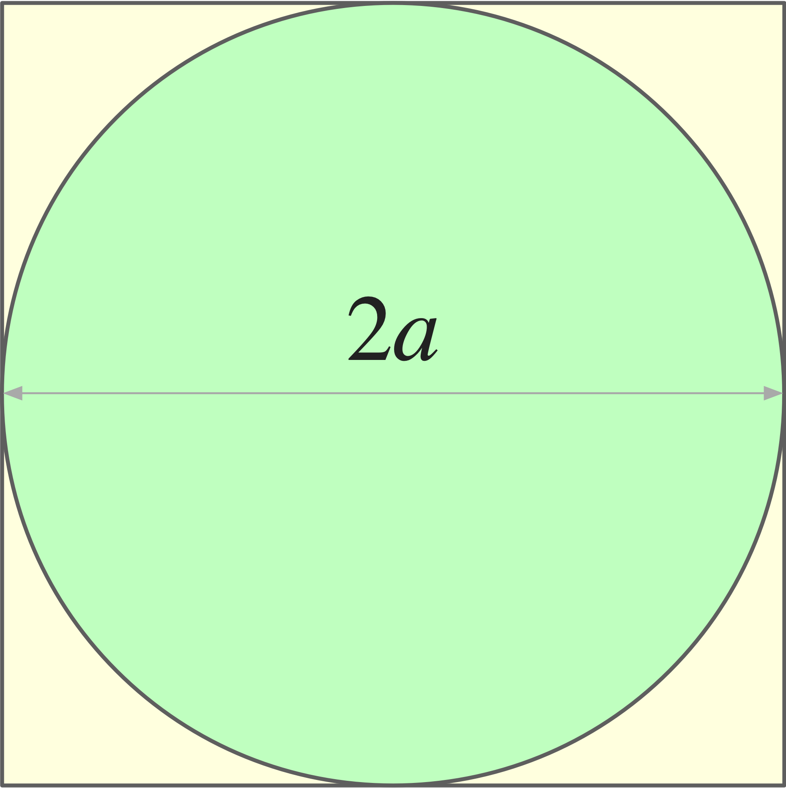
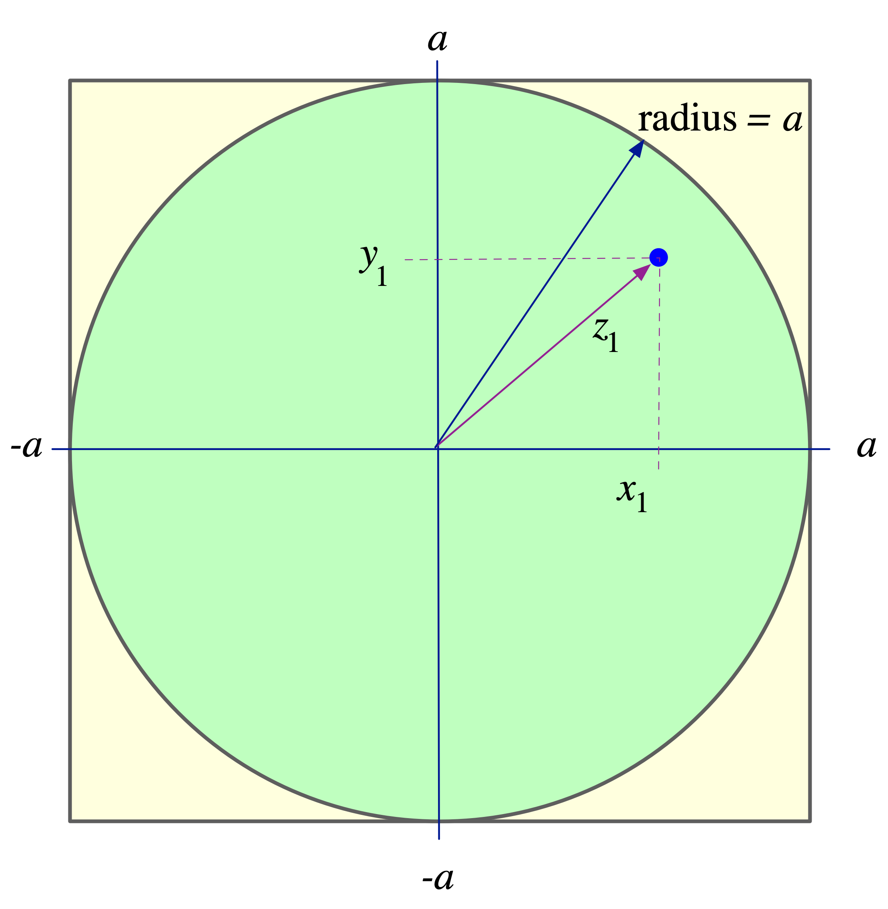

Computing pi (on pi day!)#
In observance of Pi Day (March 14), we worked out a numerical computation of the number \(\pi\).

A circle inscribed in a square.#
We started with the observation that a circle inscribed in a square covers \(\pi/4\) of the square’s surface. Consider the arrangement shown to the right. We have a square whose edge has length \(2a\). Its surface area is \(4a^2\). A circle inscribed in that square, has a diameter also \(2a\) and therefore a radius \(a\). The surface of the circle is \(\pi r^2\) or, in this case, \(\pi a^2\).
The fraction of the square’s surface covered by the circle is given by:
Any point inside the square has a \(\pi/4\) chance of also being inside the circle. And if we consider a sufficient number of points inside the square, at random, we expect about \(\pi/4\) of them to be inside the circle. In other words: we have a way of computing \(\pi\) by throwing random points inside a square surface! The process is simple:
using a square with an inscribed circle:
N <-- number of points thrown at random, inside square
M <-- number of points inside circle
return 4*(M/N) as approximation of pi
The first thing we need to do is to set up the square with an inscribed circle, in a way that we can manipulate computationally. Next we need a way to tell if a random point inside a square is also inside the circle. And, of course, we need a way to generate random numbers.

Setting up the computational model we need.#
The geometric set up is straight forward, and shown to the right. If our square has an edge with length \(2a\), the inscribed circle has a radius of \(a\). If we place these shapes at the center of \(x\)-\(y\) axes, any point inside the square can be described by coordinates \((x, y)\) such that \(-a\leq x\leq a\) and \(-a\leq y\leq a\).
Consider a point inside the square as shown in the figure. This point, at \((x_1, y_1)\) is also inside the circle. The distance of any point from the center is given by the Pythagorean theorem; in the case of the point at \((x_1, y_1)\), that distance is \(z_1 = \sqrt{x_1^2+y_1^2}\). We can tell that the point is inside the circle because \(z_1 \leq a\).
Now, we can begin putting together some code in Java.
public static double pi(int N) {
int M = 0; // how many points inside circle
for (int i=0; i < N; i++) { // loop to throw N points
// x = random number anywhere from -a to a
// y = random number anywhere from -a to a
double z = math.sqrt(x*x+y*y); // distance of random point (x,y) from center
if (z <= a) // is distance less than radius?
M++; // point is inside circle; count it.
}
return 4.0*((double)M/(double)N); // approximate value of pi
}
The last thing we need to analyze is how to find a random number in the interval from \(-a\) to \(a\). Java can generate random numbers in the range from 0 to 1. The transform we want, should work as follows:
Java random number |
random number between \(-a\) and \(a\) |
0 |
\(-a\) |
1/2 |
0 |
1 |
\(a\) |
This can be accomplished with the following expression:
where \(\rho\) is a Java-generated random number. The final code is shown below.
1/**
2 * Computes pi by throwing N points, at random, inside a square and counting how many
3 * fall within an inscribed circle.
4 *
5 * @param N int number of random points to throw inside the square
6 * @return an approximate value of pi
7 */
8public static double pi(int N) {
9 // Set up a random number generator
10 Random rng = new Random();
11 // Radius of inscribed circle; also determines size of square
12 double r = 1.0;
13 // Initialize counter of points inside circle
14 int M = 0;
15 // Set up loop to try N random points
16 for (int i = 0; i < N; i++) {
17 // Obtain coordinates for random point
18 double x = -r + 2.0*r*rng.nextDouble();
19 double y = -r + 2.0*r*rng.nextDouble();
20 // Distance of random point from center
21 double z = Math.sqrt(x*x+y*y);
22 // If this point is within circle, update count
23 if (z <= r)
24 M++;
25 }
26 return 4.0*((double) M/(double) N);
27} // method pi
Casting both M and N as double variables in the return statement is a bit redundant. It suffices to cast as double only one of them. Nevertheless, it makes the code appear more purposeful, at least in my eyes.